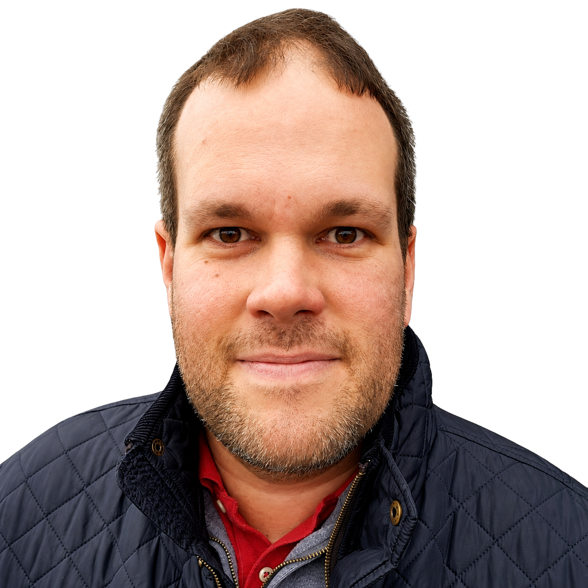

I find business problems that can be solved with software, AI, automation and the internet — then build practical ways to solve them.

Sometimes that's missed sales. Sometimes it's poor follow-up. Sometimes it's a slow manual process, weak marketing or simply something the internet can now do considerably better.
My job is usually to work out the system. That might mean software, automation, AI, a new customer journey or an entirely new business built around the opportunity.
My background is in ecommerce, software and online business. I've worked with companies including Tesco, eBay and House of Fraser, alongside years spent consulting and contracting.
These days I'm much more interested in building my own businesses. I spend most of my time taking ideas from "there should be a better way" to something real that customers can actually use.
Use the internet to make things work better and make more money.
If something in your business is costing sales, wasting time or feels unnecessarily difficult, I'm always interested in hearing about it.